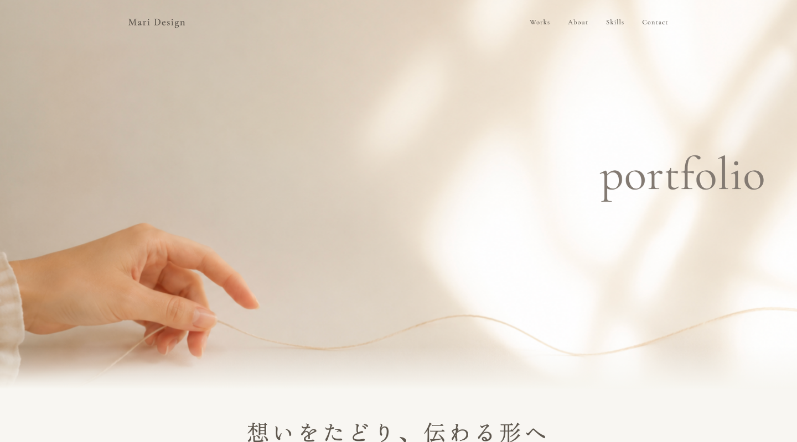
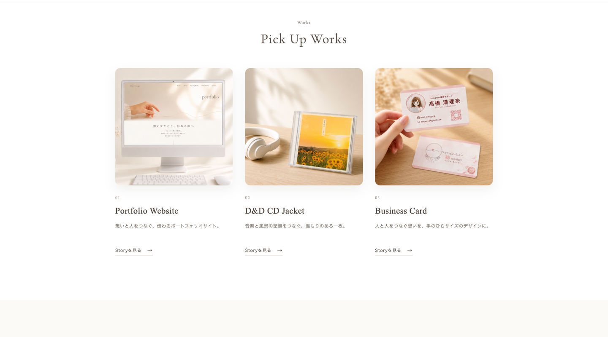
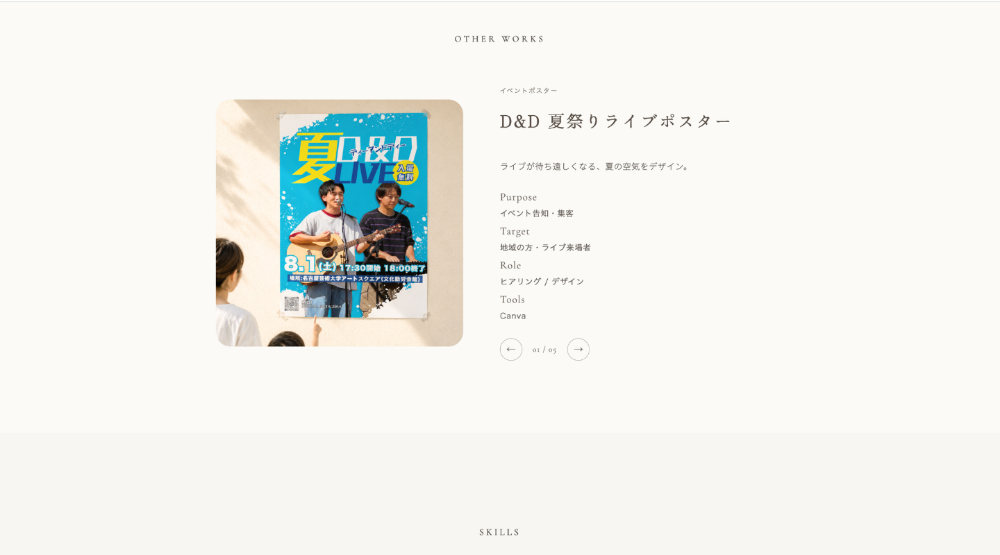

Web Design / Coding
Portfolio Website

Overview
デザインからコーディングまで一貫して制作した、 自身のポートフォリオWebサイトです。
制作実績を掲載するだけではなく、 作品に込めた意図や考え方まで伝わるポートフォリオを目指しました。 グラフィックデザインとWebデザインを一つの世界観でまとめることで、 自分らしい表現と制作姿勢が伝わる構成にしています。
Challenge
一般的なポートフォリオは作品を並べるだけになりやすく、 「なぜそのデザインにしたのか」 「どのような考えで制作したのか」が 伝わりにくいと感じていました。
そのため、作品だけでなく制作意図やコンセプトも伝えられる構成を意識し、 見る人がデザインの背景まで理解できるポートフォリオを目指しました。 また、JavaScriptを用いた作品切り替え機能など、 コーディングスキルも伝わるよう工夫しています。
Concept
想いを伝えることが、デザインの本質。
Webとグラフィックデザインを一貫して制作することで、 ブランドの想いや世界観の軸をぶらさずに届けられると考えています。
サイト全体には「人と人とのつながり」をテーマに、 糸をモチーフにした細いラインを取り入れました。 柔らかく流れる線は世界観を表現すると同時に、 自然な視線誘導としても機能するよう設計しています。
Design Point
- 糸をモチーフにした繊細なラインで、 ブランドコンセプトを表現
- JavaScriptを用いた「Other Works」の 作品切り替え機能を実装
- ファーストビューでは写真の表示位置を細かく調整し、 印象的な見せ方を設計
- 余白や文字組みを調整し、 作品が主役になるレイアウトを意識
- グラフィック作品とWeb作品が自然につながる、 統一感のあるデザイン
Project Gallery



Project Information
Role
企画 / デザイン / コーディング
Tools
Canva / VS Code / ChatGPT
Development
HTML / CSS / JavaScript
Period
3日間